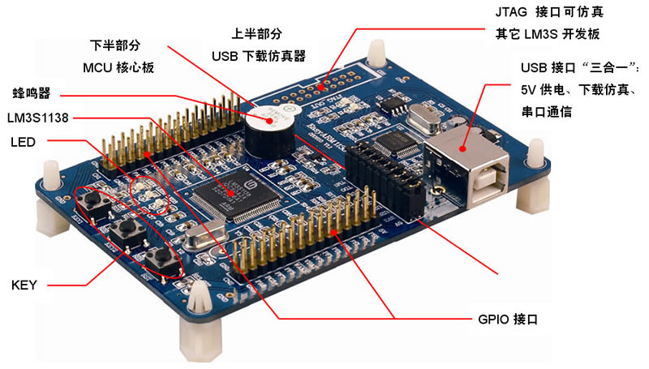

使用EasyARM1138作为小车控制模块的控制核心如下图所示。Luminary Micro公司的EasyARM1138，它是专门针对广大电子信息专业在校大学生而设计的一款基于ARM Cortex?-M3先进内核的高性能、低价格的32位开发板。强大的MCU内核 ，丰富的外设资源 ，内嵌USB接口的下载仿真器 ，在软件上采用“C语言＋驱动库”的新概念开发模式 ，开发软件功能强大，精确度和运算速度也都完全符合我们系统的要求。

采用12V蓄电池为直流电机供电，将12V电压通过7809和7805降压、稳压后给单片机系统和其它芯片供电。蓄电池具有较强的电流驱动能力以及稳定的电压输出性能。
采用NRF24L01无线收发模块对小车进行无线控制，它具有以下几个特点:①功耗低。能够在以一6 dBm的功率发射时，工作电流只有9 mA；在以0 dBm的功率发射时，工作电流仅11．3 mA；而在接收时，工作电流仅12．3 mA，因此具有掉电和空闲多种低功率工作模式。②体积小，采用QFN20封装。③供电电压为1.9~3.6 V，可方便集成到各种电子器件。具有成本低，速率高，传输可靠等优点。
这样，无论是出库还是入库，通过RFID技术可以实现货物及车辆的可视化、即时化管理。